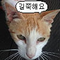

표정이 ..ㄷㄷ

꾹꾹이 해주세요
얼굴 시커먼거보니 집이 좀 추운가베 따땃하게 해줘라
살짝 졸린가본데 ㅋ
우리 나비도 이러면 좋겠다
나도 무릎냥 키워보고십따
샴이 진짜 이쁜데다가 개냥이여서 키우기 좋은듯
내가 지금까지 봤던 샴 특징.
개냥이, 멍청함
ㅈㄴ커엽네 갓냥쉑ㅋㅋㅋㅋㅋ
ㅈ냥인데
고양이 키우는데 책상 밑으로 저런 구조에 배선정리 안돼있으면 청소 개빡세거나 포기하고 더러워지거나 양자택일 강요받음
지인 고양이를 개드립에서 보네 ㅋㅋ
ㄳㅈ?
방이 추운가보네
샴고양이는 진짜 다 개냥이들인가
샴이 키울맛나던데 앵겨붙어서
고양이 아이돌해도 되겠네
나 혼자 살면 꼭 샴고양이 키울꺼야
샴 고양이는 정말 요물인가 봐. 샴 기르는 친구 만나면 맨날 지 고양이 자랑 들어야 함. ㅋㅋ
샴은 천사야 너무 이뻐!!!!!!!

털색을 보아하니 이불밖으로 얼굴이랑 앞발만 내밀고 있었구나